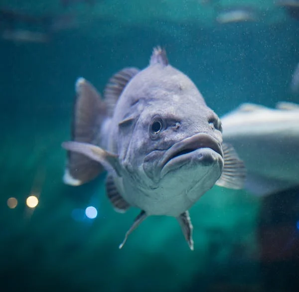

Largemouth Bass
It can be said that largemouth bass are America's number one gamefish. They inhabit nearly every body of water, fight hard, and accept a wide variety of lures and baits, making them quite fun to catch.
Baits, Lures, and Tactics
Bass are one of the top predators in their local foodchains, eating worms, other fish, crayfish, aquatic larvae, insects, lizards, salamnders, and even birds and snakes.
Natural Baits
- Live/cut-up baitfish
- Nightcrawlers/worms
- Crayfish
Lures
Lures (artificials) give the angler the chance to be much more engaged than sitting and letting the natural bait do the "work." When presenting lures, the angler imparts the "action," making the lure seem like live forage. They fall into several categories: jigs, hardbodies, and soft plastics. Jigs imitate crayfish or bluegill; hardbodies include crankbaits, poppers, walkers, and jerkbaits which imitate baitfish; and soft plastics cover just about everything - worms, fish, crayfish, lizards, and aquatic larvae.
Tactics
Tactics differ depending on the time of day, the time of year, and the weather. However most tactics fall into two categories - slow and quiet or loud and fast. Slow and quiet (finesse) will almost always get fish, no matter the conditions. Lures like straight-tailed worms or small jigs don't spook the fish, but entice them to bite. While this method can consistently catch fish (even big ones), there is a place for loud and fast.
Loud and fast would include hardbody crankbaits, large jigs, spinnerbaits, and poppers/walkers. The goal here is to produce a "reaction strike," hence why these lures are big, loud, and flashy. These lures often vibrate a certain way, mimicking a wounded baitfish; bass can feel these vibrations through their lateral lines, helping bass locate their prey. Fish only have a second to view the lure as it streaks by them, but it'll get their attention, prompting their instincts as a predator to take over and attack the lure. What's funny is the fish might not even be hungry, but they attack anyway; that's the beauty of loud and fast.